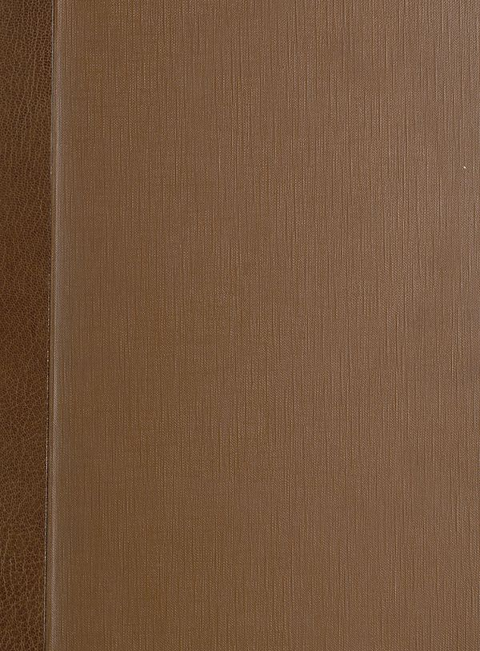

Source · scan and Parse blocks
Layers 2

Parse text by block reading order
- 0Textto the same as we can use the same method. We have used the same methods for the case of the system and the system. The number of cells are not available in the case, but also the number of cells are not available in the case. In this case, we have used the same method to determine the number of cells that are used to generate a single cell size. We have used the same method to calculate the number of cells that are used to generate a single cell size. We have used the same method to calculate the number of cells that are used to generate a single cell size. We have used the same method to calculate the number of cells that are used to generate a single cell size. We have used the same method to calculate the number of cells that are used to generate a single cell size. We have used the same method to calculate the number of cells that are used to generate a single cell size. We have used the same method to calculate the number of cells that are used to generate a single cell size. We have used the same method to calculate the number of cells that are used to generate a single cell size. We have used the same method to calculate the number of cells that are used to generate a single cell size. We have used the same method to calculate the number of cells that are used to generate a single cell size. We have used the same method to calculate the number of cells that are used to generate a single cell size.
- 1Page-footer50
Provenance page_id, checksum, Parse model
- page_id
- britannica:309f765b1ecc83e0a7f7762e44b4a927a7555443:train:452
- sha256
- 233256cb3c3c25e03e847aa65e26f3e82cd05f8ef6e302c7ce69fe42a042f2cf
- Parse
- nvidia/nemotron-3.5-parse · finish stop